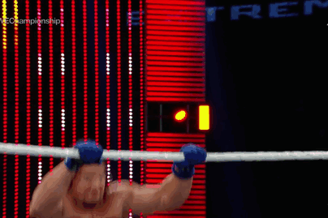

Рестлинг (англ. Professional wrestling) — театрализованное спортивное шоу, сочетающее борьбу и работу на публику. Сценарии в реслинге развиваются в ходе шоу, организованных различными компаниями — промоушенами (как правило, каждая компания имеет свои собственные шоу, зачастую еженедельные, и свои собственные сценарии). Являясь по своей сути неким спортивным театром, рестлинг имеет рамки кейфеба (англ. kayfabe) - иллюзии правдоподобности, неких собственных правил внутри сюжета, который не имеет связи с настоящей реальностью.
Основываясь как второстепенное событие во время карнавалов в Северной Америке, рестлинг постепенно перерос в нечто самостоятельное, в обособленный жанр развлечения. В ходе времени происходила эволюция жанра, и сейчас рестлинг является одной из самых популярных мировых индустрий развлечения, приносящей многомиллионные доходы владельцам самых успешных продвижений. За свои полтора века существования рестлинг пережил множество взлётов и падений своей популярности. С появлением телевидения рестлинг получил своего рода новое дыхание, которое позволило ему встать в один ряд с популярнейшим во все времена боксом и развивать свою популярность за счёт особых шоу — pay-per-view (вид дистрибуции шоу, в котором покупатель получает доступ к просмотру события, предварительно заплатив за него). PPV и по сей день приносят большие доходы, причём не только в рестлинг-бизнесе — данный вид распространения переняли многие другие сферы развлечения.
В первую очередь, рестлинг — это жёсткая борьба, основанная на борьбе кэтч, с течением времени дополнявшейся различными атакующими и силовыми приёмами, бросками и новыми захватами, а также разнообразными акробатическими манёврами, огромное количество используемых на данный момент приемов пришло из различных боевых искусств и единоборств. Также в матчах по особым правилам для достижения победы используются сторонние предметы и "орудия", которыми можно нанести урон - стулья, столы, лестницы, даже чемпионские пояса и многое другое.
Матчи в рестлинге могут похвастаться большим разнообразием и вариативностью правил, как минимум по причине отсутствия утвержденного официального свода правил, который соблюдался бы всеми федерациями. Однако существуют уже устоявшиеся принципы и стандарты проведения боя, которыми пользуются большинство федераций. Для начала рассмотрим правила проведения стандартного матча 1 на 1,2 на 2,3 на 3 и тд:
Поединке проходят в пределах ринга, который в большинстве промоушенов имеет четырехугольную форму. В случае, если матч является командным, на ринге разрешено находиться лишь одному из участников команды, в то время как остальные ожидают с другой стороны канатов. Большинство командных матчей основаны на структуре «передачи тага» (англ. tag team), подразумевающее смену партнеров по команде в поединке путем прикосновения легального на данный момент к тому, кого необходимо ввести. В матче может быть лишь один (либо ни одного) победитель — будь то отдельный исполнитель или команда. Победа (фолл — «fall») причисляется следующими путями: